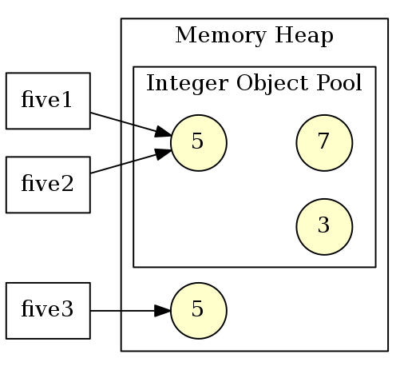

Core Java
Курс лекций. Лекция 5
@inponomarev
Регулярные выражения
String input = "11:59 am";
Pattern pattern =
Pattern.compile("([1-9]|1[0-2])\\s*:\\s*([0-5][0-9])\\s*([ap]m)");
Matcher matcher = pattern.matcher(input);
//matches() требует совпадения всей строки,
//find() -- находит первое совпадение
if (matcher.matches()) {
String hours = matcher.group(1); //11
String minutes = matcher.group(2); //59
String period = matcher.group(3); //am
}Поиск/замена в цикле
Пример на StackOverflow: xотим получить на выходе "1xxxx23":
Map<String, String> replacements = new HashMap<String, String>();
replacements.put("${env1}", "1");
replacements.put("${env2}", "2");
replacements.put("${env3}", "3");
String line ="${env1}xxxx${env2}${env3}";Поиск/замена в цикле
//Начиная с Java9, можно использовать StringBuilder
StringBuffer sb = new StringBuffer();
Pattern p = Pattern.compile("(\\$\\{[^}]+\\})");
Matcher m = p.matcher(line);
while (m.find()) {
String repString = replacements.get(m.group(1));
if (repString != null)
m.appendReplacement(sb, repString);
}
m.appendTail(sb);
System.out.println(sb.toString()); //1xxxx23Регулярные выражения
Достоинства
Проверяют формат строки
Гибкие к необязательным/незначащим разделителям, "мусору" и т. п.
Группы — мощнейший инструмент выделения данных из строки
Цена, которую мы платим
Нужно учиться пользоваться (написаны целые книги)
Нужно учиться грамотно пользоваться (есть возможность просадить производительность)
Выглядят уродливо и непонятно
Конечные автоматы
Как разобрать строку вида?
Название,Товары и услуги
ООО "Рога и Копыта","рога, копыта"
"OOO ""Берёзка""",веники берёзовыеКонечный автомат!
Реализация
enum State {START, QUOTED_BODY, QUOTE_READ, UNQUOTED_BODY}
List<String> parse(String line) {
State state = State.START;
List<String> result = new ArrayList<>();
StringBuilder fieldValue = new StringBuilder();
for (char c : line.toCharArray()) {
switch (state) {
case START: . . .
case QUOTED_BODY: . . .
case QUOTE_READ: . . .
case UNQUOTED_BODY: . . .
}
}
result.add(fieldValue.toString());
return result;
}Начали читать поле
case START:
fieldValue = new StringBuilder();
if (c == '"')
state = State.QUOTED_BODY;
else {
fieldValue.append(c);
state = State.UNQUOTED_BODY;
}
break;Закавыченное значение
case QUOTED_BODY:
if (c == '"')
state = State.QUOTE_READ;
else {
fieldValue.append(c);
state = State.QUOTED_BODY;
}
break;Встретилась кавычка
case QUOTE_READ:
if (c == '"') {
fieldValue.append(c);
state = State.QUOTED_BODY;
} else if (c == ',') {
result.add(fieldValue.toString());
state = State.START;
} else { //invalid input format
throw new IllegalStateException();
} break;Незакавыченное значение
case UNQUOTED_BODY:
if (c == ',') {
result.add(fieldValue.toString());
state = State.START;
} else {
fieldValue.append(c);
}
break;В завершение
Математический факт: Каждый ДКА может быть сконвертирован в регулярное выражение, и наоборот.
При обработке строк регулярки и ДКА — наше всё.
Wrapper Types
Примитивные типы несовместимы с объектами. Поэтому есть Wrapper Classes:
|
|
|
|
|
|
|
|
Кэширование (object pool)
|  |
Wrapper-типы похожи на строки
Объекты иммутабельные. Если нужен новый — создаём новый.
Проверка равенства — только по
equals!
Превращение числа из строки и в строку
Статические методы:
Integer.parseInt(value, radix)Integer.toString(value, radix)Double.parseDouble(value)Double.toString(value)
Autoboxing & unboxing
ArrayList<Integer> list = new ArrayList<>();
//autoboxing :-)
list.add(3);
//without autoboxing :-(
list.add(Integer.valueOf(3));
//unboxing :-)
int n = list.get(i);
//with no automatic unboxing :-(
int n = list.get(i).intValue();Не всегда всё так очевидно с автобоксингом
Integer n = 3;
//unbox - increment - box.
//not so effective!!
n++;
Integer a = 1000;
Integer b = 1000;
if (a == b) . . . //NO! THIS WILL FAIL!Класс BigInteger
BigInteger i = new BigInteger("123456789012345678901234567890");
BigInteger j = new BigInteger("123456789012345678901234567892");
BigInteger sum = i.add(j);
BigInteger difference = i.subtract(j);
BigInteger quotient = i.divide(j);
BigInteger product = i.multiply(j);Класс BigDecimal
public static BigDecimal calculateTotalAmount(
BigDecimal quantity, BigDecimal unitPrice,
BigDecimal discountRate, BigDecimal taxRate) {
BigDecimal amount = quantity.multiply(unitPrice);
BigDecimal discount = amount.multiply(discountRate);
BigDecimal discountedAmount = amount.subtract(discount);
BigDecimal tax = discountedAmount.multiply(taxRate);
BigDecimal total = discountedAmount.add(tax);
// round to 2 decimal places using HALF_EVEN
BigDecimal roundedTotal = total.setScale(2, RoundingMode.HALF_EVEN);
return roundedTotal;
}Полный зоопарк классов ввода-вывода

Классы для ввода-вывода текста
Базовые потоки ввода/вывода
Комбинирование потоков
Path path = Paths.get("path/to/file.dat");
try (DataInputStream dis =
new DataInputStream(
new BufferedInputStream(
Files.newInputStream(path)))) {
double doubleVal = dis.readDouble();
long longVal = dis.readLong();
}Комбинирование потоков: чтение Zip-файла
Path path = Paths.get("path/to/file.zip");
try(ZipInputStream zis = new ZipInputStream(
Files.newInputStream(path));
DataInputStream dis = new DataInputStream(zis)) {
. . .
}Чтение/запись текстовых данных
Современный, простой и правильный метод:
Path path = Paths.get("path/to/file.txt");
//Ленивая вычитка
Stream<String> lines = Files.lines(path, StandardCharsets.UTF_8);
//Вычитка всего содержимого в память
List<String> strings =
Files.readAllLines(path, StandardCharsets.UTF_8);Использование BufferedReader
try (BufferedReader br =
Files.newBufferedReader(path, StandardCharsets.UTF_8)){
String line;
while ((line = br.readLine())!=null){
. . .
}
}Сохранение готовых данных в текст
Path path = Paths.get("path/to/file.txt");
List<String> lines = new List<String>();
lines.add(...)
//Если всё уже готово в памяти
Files.write(path, lines, StandardCharsets.UTF_8);Сохранение данных в текст по мере поступления
try (PrintWriter printWriter = new PrintWriter(
Files.newBufferedWriter(
path, StandardCharsets.UTF_8))) {
printWriter.println(...);
printWriter.printf(...);
}Работа с файловой системой
Устаревший
File(ещё может встретиться, в частности, как аргумент конструктораFileInputStream.Более современный
Path(Java 7+)
Работа с файловой системой
//Path не обязательно указывает
//на уже существующий файл или каталог!!
Path absolute = Paths.get("/home", "harry");
Path relative = Paths.get("myprog", "conf", "user.properties");
Path subPath = absolute.resolve("file.txt");
subPath.getParent(); //родитель
subPath.getFileName(); //последняя компонента путиРабота с файловой системой
//все компоненты, кроме последней, должны существовать
Files.createDirectory(path);
//создаёт все директории в path
Files.createDirectories(path);
//создаёт пустой файл
Files.createFile(path);
//создаёт временный файл в локации, специфичной для ОС
Files.createTempFile(prefix, suffix);Проверка файлов
//имеет смысл проверять перед тем, как открывать поток на чтение
Files.exists(path)
Files.isReadable(path)
Files.size(path)Чтение списка файлов и обход директории в глубину
Stream<Path> list = Files.list(path);
Stream<Path> walk(Path start,
int maxDepth, FileVisitOption... options)Копирование, перемещение и удаление файлов
Files.copy(fromPath, toPath)
Files.move(fromPath, toPath)
Files.delete(path)Часы и API для работы со временем
Сколько секунд в сутках?
Системные часы
long System.currentTimeMillis()— количество миллисекунд, прошедшее с наступления полуночи 1 января 1970 года на Гринвичском меридиане минус число високосных секунд, с точки зрения системных часов.Гранулярность может быть больше миллисекунды.
"Замирают" при вставке високосной секунды.
Значения могут "скакать" в обе стороны при синхронизации через NTP!
long System.nanoTime()— монотонные часы.Наносекундная точность.
Нет привязки к "календарному" времени.
Когда что использовать?
long System.nanoTime()— при замерах периодов времени.Но для замеров производительности программ на Java надо применять JMH.
long System.currentTimeMillis()— для генерации штампов времени (с пониманием ограничений).
DateTime API
Устаревшие, неудобные, мутабельные, непотокобезопасные классы (не используйте их):
Java 1.0
Date(он всё ещё с нами из-за JDBC),Java 1.1
Calendar.С ними работает
DateFormat.
Современные (Java 8+), иммутабельные, разработанные с учётом набитых шишек классы:
LocalDate,LocalTime,Instant,Duration,PeriodZoneId,ZonedDateTime.С ними работает
DateTimeFormatter.
Instant
Точка на временной прямой
UNIX time
//текущий момент
Instant.now();
//явно заданный Instant
Instant.ofEpochSecond(3);
//Какой сегодня год?
int year = Instant.now().get(ChronoField.YEAR);LocalDate, LocalTime и LocalDateTime
Дата и время в "человеческом" понимании.
Без информации о том, в каком часовом поясе → без привязки к
Instant.Часто такая привязка не нужна: "еженедельный митинг в 9:00" в привязке к UTC "уползёт" при переходе на летнее время.
LocalDate date = LocalDate.of(2014, 3, 18); //18 марта 2014 г
int year = date.getYear(); //2014
Month month = date.getMonth(); //MARCH
int day = date.getDayOfMonth(); //18
DayOfWeek dow = date.getDayOfWeek(); //TUESDAYLocalTime и LocalDateTime
LocalTime time = LocalTime.of(13, 45, 20); //13:45:20
int hour = time.getHour();
int minute = time.getMinute();
int second = time.getSecond();
LocalDateTime dt1 = LocalDateTime.of(2014, Month.MARCH, 18, 13, 45, 20);
LocalDateTime dt1 = LocalDateTime.of(date, time);
LocalDateTime dt2 = date.atTime(time);
LocalDateTime dt3 = time.atDate(date);
dt1.toLocalDate(); //2014-03-18
dt1.toLocalTime(); //13:45:20Duration и Period
Duration: количество времени между двумя точками на временной прямой с наносекундной точностью.Period: разица во времени междуLocalDateв днях (например, "сколько дней действует договор?")Оба реализуют интерфейс
TemporalAmount.
//В качестве аргументов годятся LocalTime, LocalDateTime и Instant
Duration d = Duration.between(time1, time2);
//В качестве аргумента годится только LocalDate
Period tenDays = Period.between(
LocalDate.of(2014, 3, 8),
LocalDate.of(2014, 3, 18));Конструирование новых объектов из старых
Instant i = Instant.now();
Duration d = Duration.ofSeconds(3);
//например:
i.plus(dd.multipliedBy(10))
.minus(dd.minus(Duration.ofMillis(1)));
//то же самое можно сделать с LocalDateTimeПечать и парсинг даты-времени
DateTimeFormatter formatter1 =
DateTimeFormatter.ISO_LOCAL_DATE; // YYY-MM-DD
DateTimeFormatter formatter2 =
DateTimeFormatter.ofPattern("dd/MM/yyyy");
DateTimeFormatter formatter3 = new DateTimeFormatterBuilder()
.appendText(ChronoField.DAY_OF_MONTH)
.appendLiteral(". ")
.appendText(ChronoField.MONTH_OF_YEAR)
.appendLiteral(" ")
.appendText(ChronoField.YEAR)
.parseCaseInsensitive()
.toFormatter(Locale.ITALIAN);В строку и из строки
LocalDate date = LocalDate.of(2014, 3, 18);
String s = date.format(
DateTimeFormatter.ISO_LOCAL_DATE); // 2014-03-18
LocalDate date2 = LocalDate.parse(
s, DateTimeFormatter.ISO_LOCAL_DATE);Часовые пояса
ZoneId moscowZone = ZoneId.of("Europe/Moscow");
ZoneId romeZone = ZoneId.of("Europe/Rome");
LocalDateTime dateTime = LocalDateTime.now();
ZonedDateTime moscowTime = dateTime.atZone(moscowZone);
System.out.println(moscowTime);
//2019-09-30T18:15:52.670+03:00[Europe/Moscow]
ZonedDateTime romeTime =
moscowTime.withZoneSameInstant(romeZone);
System.out.println(romeTime);
//2019-09-30T17:15:52.670+02:00[Europe/Rome]